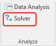

Instructions on how to check if the Solver is available in Excel, and if
not how to enable the Solver.
The Solver is an add-in and isn't available by default through the
menu of Excel. If the Solver is not present on the ribbon, then it has to be
activated first. This is a one time action.
Choose tab Data and check if the group
Analyze exists and if so whether the
Solver is present.
Figure 1: Group Analyze with Solver on the ribbon

Attention: Only proceed if the group Analyze
with the Solver is not present.
Choose File > Options > Add-Ins
A list with Microsoft Office Add-ins is displayed.
Select Excel Add-ins in the box Manage.
Figure 2: Choice of Add-Ins to manage
Click on Go....
A list of available Add-ins is displayed.
Select the check box for Solver Add-in and click on
OK.